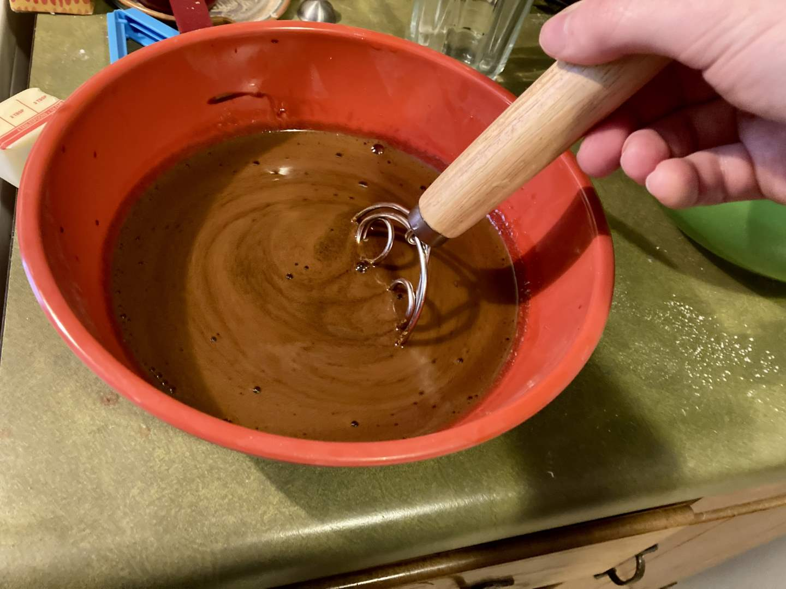
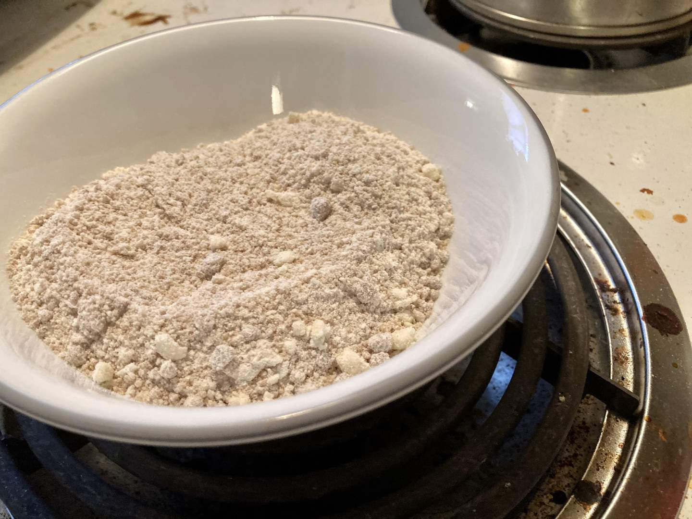
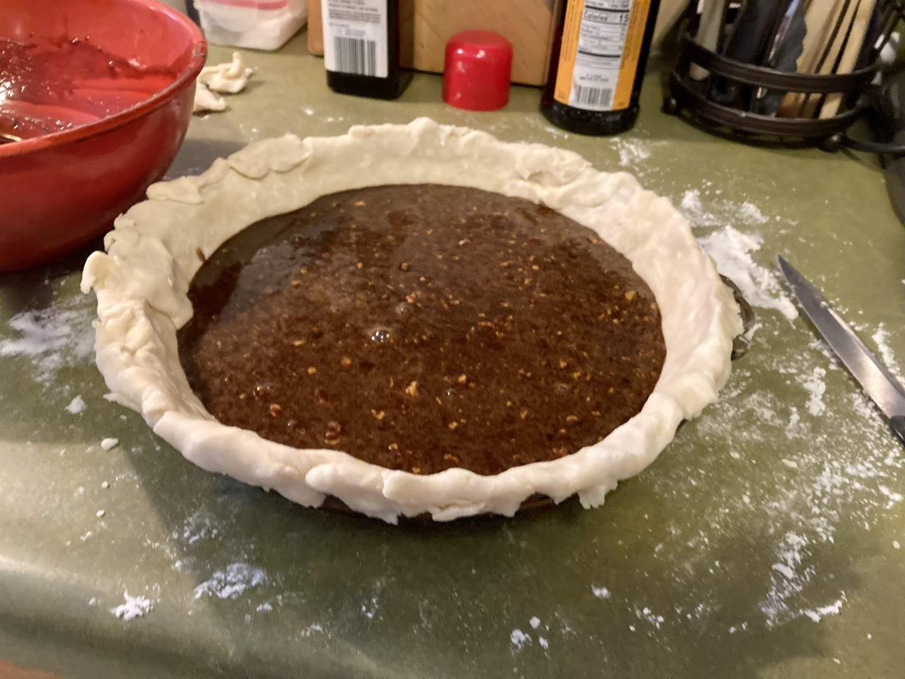
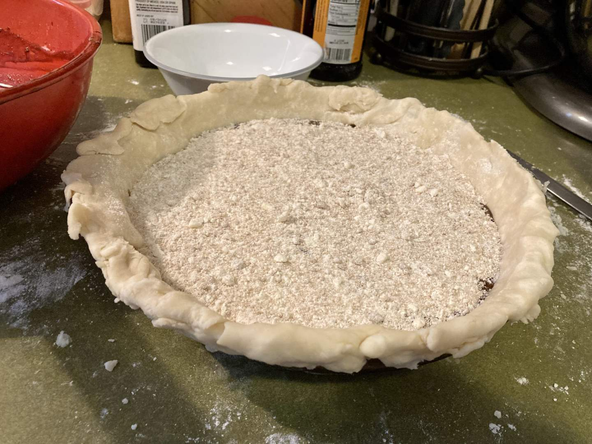
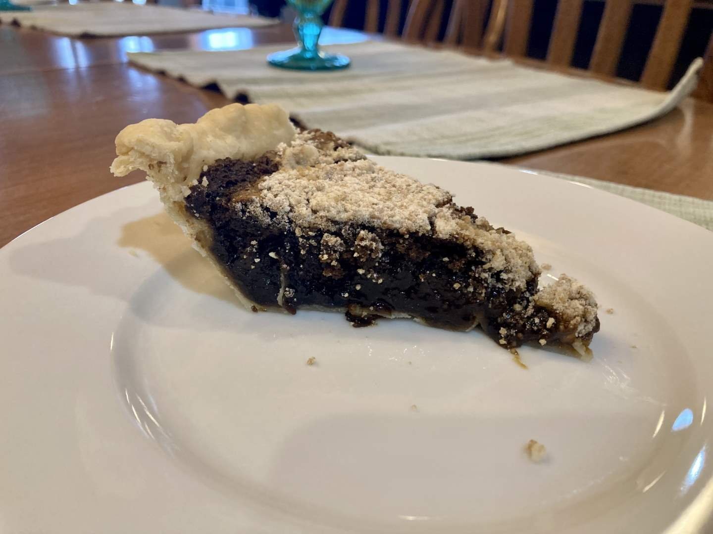

Pie 41: Shoofly
2024-03-31Recipe from Me, Myself, and Pie by Sherry Gore, page 166
Taste:
Difficulty:
Vibes:
Suggested pairing: ham, salad, rolls, deviled eggs, ice cream, other Easter foods
Since the beginning of our pie-making adventure, I had planned to make a shoofly pie for my dad’s birthday week. Shoofly pie is an Amish Mennonite classic. Every time we visited Bird-in-Hand, PA, the Bakery was an essential stop for whoopie pies and shoofly pie. My sisters and I preferred the whoopie pies, which meant my father had no competition when he bought his beloved shoofly pie. With these fond memories in mind, Ben and I baked this traditional dish to share with his family on Easter.
The filling was mostly a mixture of hot water and molasses, with baking soda added to get that rise.
The crumbs on top were simply flour, brown sugar, and butter and this layer was probably the best part of the pie. Ben sprinkled the crumbs on top and quickly put the pie in the oven, hoping it would bake solid before the crumbs sank into the very wet filling. The crumbs stayed largely on top, but the pie never set fully in the way that a key lime pie would. This was expected as the filling didn’t include much to cause setting except an egg.
The strong molasses flavor of the pie filling is supposed to be balanced out by the sweet buttery crumble on top of the filling. I think the pie was sweet, but not so much that one felt sick after eating a single slice. Ben says it was probably too sweet for his taste. Both of us agreed that the vanilla ice cream helped.
The pie was well received but it did not achieve the same amount of public praise as some of our other pies have. I am sure if we had shared this pie with my father and his Amish Mennonite mother, the pie would have been consumed immediately and heralded as a delightful dessert. Knowing your audience is important to making a great pie!
